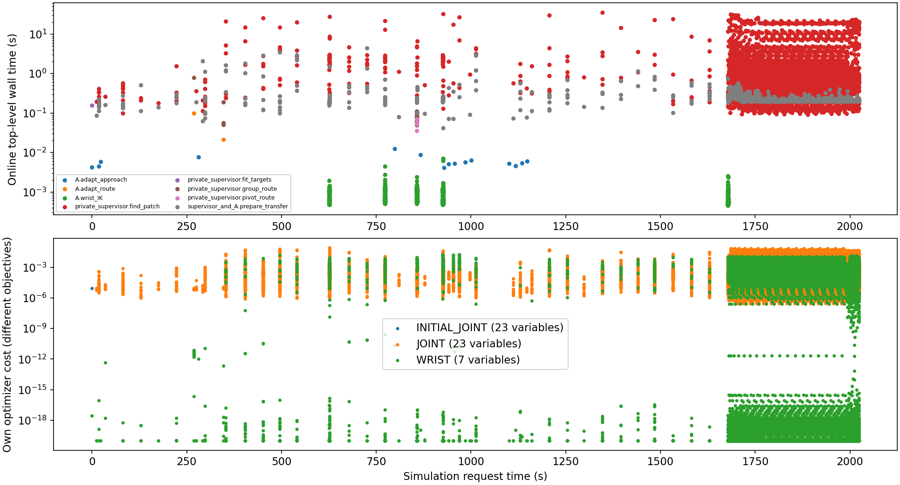
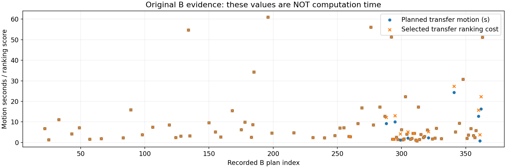
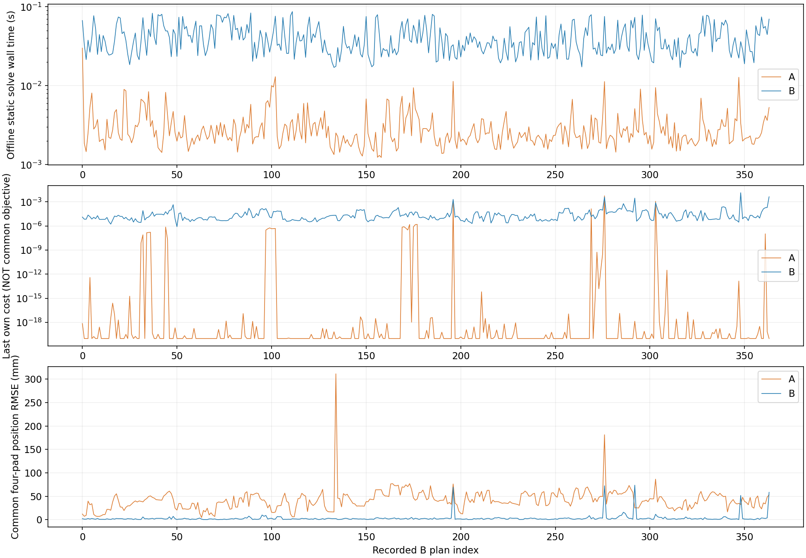

实验目的和边界
本轮检验的是去掉手指参考后能否沿用既有流程完成任务。外层预计可接触的手指数来自联合手形候选，A不执行该手形，所以预测可行不保证A实际可行。结果不代表为A重新设计过的最优腕规划器性能。
比较在同一外层调度、MCC、物理模型和保护条件下，增加四指表面目标与联合手指规划的作用。按用户选择，A 的外层调度保留 B 的预计接触人数和参考手指；A 的名义参考构造只接收腕位姿，四指实际动作仍由公共 MCC 产生。
这是“冻结 B 调度”的消融对照，区别于旧协议中连外层预测信息也禁用的 A。两组使用相同调度算法，闭环状态不同会使实际目标、腕轨迹和结束时间不同。
共同预算9000秒；2ms原生步长；超过12N仅记录，超过40N连续200ms才停止；≥8N状态仍排除覆盖。旧 B 的599份发布文件及50份运行源码保持原哈希。
每次规划：cost 和时间
规划期间仿真时钟不推进。表中的完整运行墙钟时长包含初始化、规划、原生执行和写盘，两次运行均有并行审计与视频任务；不能把它等同于纯规划时间。A调用合计覆盖已包围的几何搜索、路径与腕IK函数，尚未包含外层候选排序、调度代码及顶层日志写入。
已记录换面段中，A实际耗时1494.280秒，其中卸力暂停1094.328秒；B分别为841.650秒和66.014秒。这里是物理执行时间，排除接近/重触阶段及未记录结果的终端片段。选中评分使用计划动作时长，实际卸力暂停会增加执行耗时。逐段计划与实际时长CSV
必须区分“求解计算耗时”和“计划动作时长”。B 原日志没有逐次计算计时，也没有保存各次最小二乘 cost 或被拒绝候选；不能从仿真时间反推。原始B表完整列出 364 次已记录路线／转向／换面计划，可重建的换面评分为动作秒数，补扫时再加 3×缺少的预计接触手指数；贴面路线采用首个可行解，没有统一的路线标量cost。
A 实时记录 338649 次嵌套调用，其中顶层 12571 次、不重叠总耗时 12418.412 秒；初始化和原生控制循环不在该合计内。嵌套子调用不能重复加总。
| A实测顶层请求 | 次数 | 总wall / s | 中位 / ms | P95 / ms | 明确拒绝 / 异常 |
|---|
private_supervisor.find_patch | 5742 | 11145.376 | 697.041 | 10276.650 | 115 / 0 |
supervisor_and_A.prepare_transfer | 5627 | 1268.806 | 207.734 | 295.843 | 5566 / 0 |
private_supervisor.group_route | 25 | 2.703 | 74.778 | 173.796 | 23 / 0 |
A.wrist_IK | 1155 | 0.948 | 0.697 | 1.285 | 0 / 0 |
private_supervisor.pivot_route | 4 | 0.212 | 53.766 | 67.062 | 4 / 0 |
private_supervisor.fit_targets | 1 | 0.157 | 156.763 | 156.763 | 0 / 0 |
A.adapt_route | 2 | 0.121 | 60.454 | 95.792 | 0 / 0 |
A.adapt_approach | 15 | 0.091 | 5.343 | 9.834 | 0 / 0 |
此表各行互不嵌套，可以相加；“明确拒绝”只统计调用显式返回失败，未提供成功字段的返回值不视为成功。每次调用、同一仿真时刻累计搜索时间及求解器收敛状态均保留。按仿真时刻汇总的观察到的搜索耗时 · 分类统计JSON
计时日志中find_patch的原success字段把返回元组也算作成功；报告依据已记录的解是否存在还原其接受/拒绝状态。CSV保留recorded_success原值，success为修正统计；原始JSONL、运行控制和所有耗时均未更改。
WRIST表示7变量腕目标函数，既可能来自A参考构造，也可能是共同外层服务内部的腕种子求解；归属需要看父调用ID，不能只按变量数划分A与B的开销。cost对数图显示下限为1e−20，原始数值在CSV/JSON中完整保留。

A逐次顶层规划汇总CSV · A逐次调用、原始优化cost与耗时CSV · B全部原始规划事件CSV（缺失时间明确留空）
A调用图中的23关节求解属于共同的私有外层几何服务；A方法自身只做7关节腕IK。两者均计入实际开销，但不会将外层四指几何参考传入A的名义手指控制。

A已观测顶层调用中，累计开销最多的是private_supervisor.find_patch，共11145.376秒，占该调用合计的89.75%。单次腕IK的耗时需要结合候选搜索、换面重试、接触结果与最终覆盖率一起评价。下方静态微基准只比较单次参考求解，不能替代上述整任务开销。
补充：逐规划事件的配对静态IK微基准
静态输入分布来自B记录：共用保存的手臂起点，A使用公共初态的名义手形，B使用保存状态的手形种子。每个事件每种方法测一次，未绑核、未重复计时；环境版本和线程设置见微基准metadata。它不是两组各自全部在线请求的同分布统计。
在B每个已记录规划动作的保存状态上，分别执行A腕IK和B四指联合IK，交替求解顺序。输入是保存的命令、触点参考和滤波法向，不能精确重建历史候选搜索。因此以下是新测量的静态求解性能，绝不是B当时的完整规划耗时。
A/B 中位求解时间 2.36 / 36.34 ms；P95 6.78 / 76.71 ms。共同四指位置RMSE中位数 40.10 / 1.93 mm。
A的优化器cost衡量腕位置、腕朝向和臂间隙；B的cost衡量四指目标、姿态先验和间隙，二者维度、残差项不同，不能用cost较小说某方法更好。另列同一四指位置误差，作为共同后验评价。
各自优化器cost中位数：A为3.22054e-23，B为1.32309e-05；因目标函数不同，这两个数不能直接排名。按各自判据拒绝的请求数：A 4，B 65，每组总计364个请求。统计包含全部请求，未剔除失败项；两者的接受判据也不等价。

逐事件A/B求解cost、wall/CPU时间与共同误差CSV · 统计及范围声明 · 全部原始求解日志